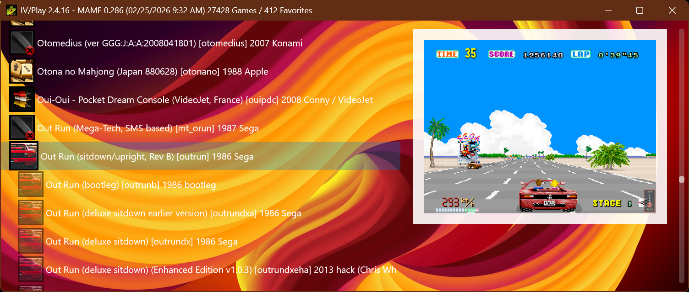
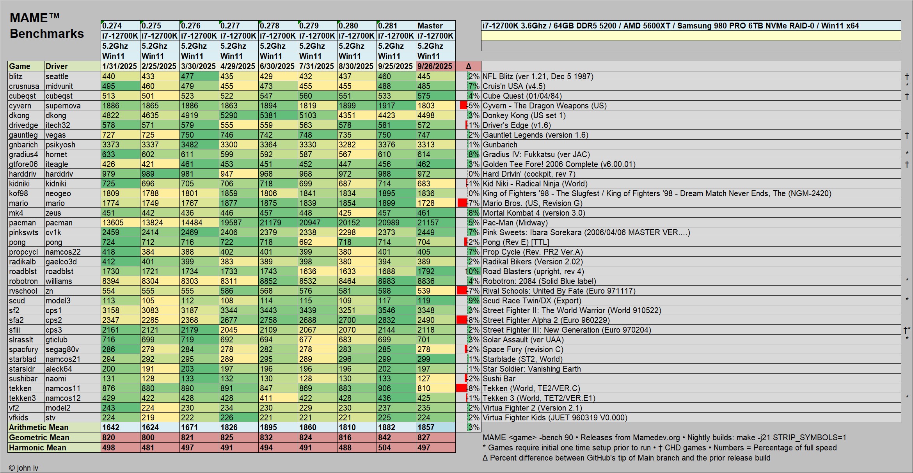

IV/Play is a high‑performance, keyboard‑driven frontend for MAME™. Designed for today’s multi‑core, GPU‑powered PCs, its DirectX engine delivers smooth scrolling, instant artwork, and zero‑lag navigation. Browse, filter, and launch thousands of titles with fluid responsiveness on modern Windows systems.
IV/Play 2.1.1 (10/01/2025) • User Guide (PDF)
Art assets updated to MAME 0.281 as of 8:40 PM 09/26/2025
© john iv • Est. 08/11/1998 • Architectural & Performance Whitepaper (PDF)